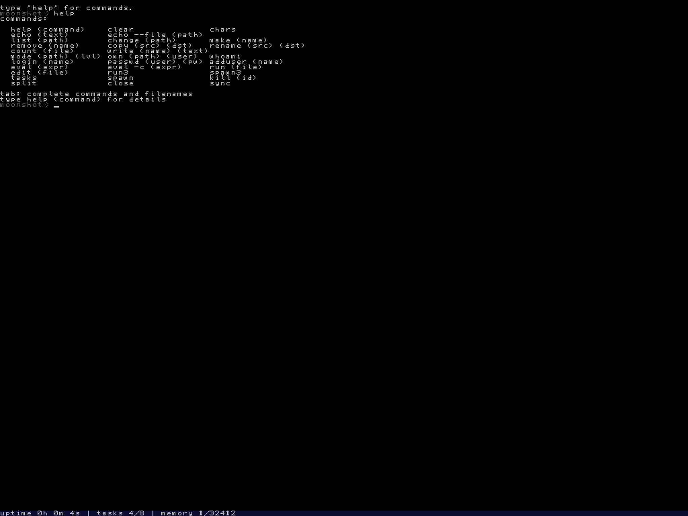

about
how this started
c0 and coff exist because writing a kernel in someone else's language, compiled by someone else's compiler, would leave the most interesting layers of the machine unexplored.
all of this is built by one person, as a hobby, in whatever hours a day leaves over. there is no roadmap and no version of "done" being raced toward. the intent is to keep working on it indefinitely, for as long as it stays interesting, which so far looks like it could be a lifetime.
the operating system
moonshot is a operating system for x86_64, built from scratch, booted through Multiboot and GRUB and run, for now, under QEMU. it is written in c0, a language built for the purpose, and compiled by coff, a toolchain built alongside it.
the aim is a real graphical system. a linear framebuffer with a hand-written font renderer already draws to the screen.

the language and the compiler
c0 is a small, C-like, imperative systems language and coff is what compiles it. the two exist above all for one reason, to be the language and toolchain that moonshot is written in.
the compiler is self-hosted, which means it compiles its own source, and moonshot is built exclusively through that self-hosted compiler, so the whole stack rests on as little outside itself as it possibly can.
licence
the code (moonshot, coff and c0) is licensed under the GNU GPL, version 3 or later. anyone who distributes the software, or a work built from it, must release their source under the same terms, so everything downstream stays open.